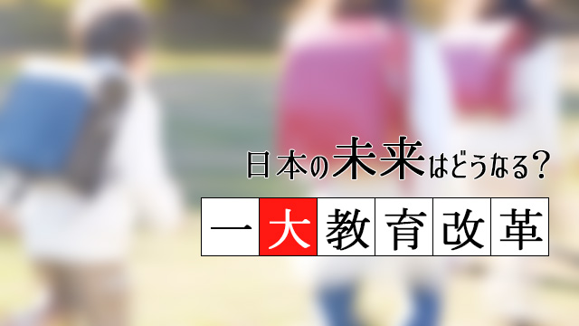

前回の記事（日本の未来はどうなる？迫りくる一大教育改革）で触れたように、いま学校教育の現場で大きな変化が起こりつつあります。
従来のように先生が黒板の前で、板書しながら解説し生徒はそれを写しながら聞き覚えるという形が変更を迫られているのです。
それと呼応して2020年からは大学入試も改革され、より思考型の問題を使うことが方針となっています。
この背景には何があるのかというのが今回のテーマです。
なぜいま主体的学習なのか
ズバリ言うと社会的要因が大きいのです。
教育、特に日本の教育は長い間知識つめこみ型でそれも「教わった通り早く正確に覚える、答える」が主流でした。
しかし、知識暗記型の勉強しかしてこなかった人はどうしてもマニュアル依存型の受け身なタイプになりがちです。
これだと変化の激しい社会に対応できない。
情報やテクノロジーが急速に拡散し発展し続け、国境を越えて人や経済が行き来する時代においては、広い視野と総合的な判断力が必要で、知識を覚える力よりも何が問題でどう解決するか瞬時に思考できる力の方が求められるようになりました。
技術革新や社会の変化のスピードは、あっという間に古い知識を陳腐化し、苦労して覚えた事柄もすぐに価値が半減する時代になったのです。
黙々と教科書を覚えたり、教わったことをただそっくりそのまま再現する勉強方法では新しい時代に即応できない。
そうではなく、自ら考え判断し行動する能力こそが必要になった。
そして自ら発信し、積極的に問題提起していくアクティブなタイプがいま求められている。
したがってそのような人材を育成する教育システムの整備が急がれている。
ざっと説明するとこのようになるわけです。
アクティブラーニングの問題点
こうしてアメリカ型の教育、アクティブラーニングの導入が急速に広がっているわけですが問題点もあります。
確かに日本の教育スタイルは生徒を受け身にする傾向がありました。また知識つめこみ型の暗記中心であることも認めます。
だからもっと生徒に主体性をもたせる必要性は私もずっと痛感してきたことではあります。
しかし、だからといっていきなりグループワークやグループディスカッション、発表会やディベート形式の授業を導入すること。まして先生がほとんど解説も板書もしない授業は、欧米と国民性や文化風土も異なる日本の教育現場でただちに根づくとは思えません。
私も経験ありますが、グループワークやディベートなどをやるとけっこう生徒たちは楽しく盛り上がったりはします。
しかし、やはり一部の「優秀な生徒」が全体をリードしがちだし、楽しいだけで何も知識が得られない生徒も出てきます。
知識の暗記もやはり必要な能力です。というかむしろ従来以上の知識（教科書だけに限らず）があってはじめて、ディベートやディスカッションも意味あるものになります。
知識の暗記だけが勉強なのだという姿勢そのものは、これからの時代通用しなくなりますが、知識が不必要ということにはならないからです。
結局このままでは、アクティブラーニングといっても形だけの導入に終始し肝心の学力そのものはかえって低下するという事態になりかねません。
そして一部の学校（中・高）や一部の大学のみが、かろうじて「主体性ある人間の育成に成功する」という構図が見えてきます。
これが私たちがいま懸念する、国民の二極化構造です。
改革は未来への危機感から
さらにもう一つの問題があります。
いまこの「主体的学習」の導入「思考的能動的タイプ」の養成は、小学校から高校まで一律に推し進めようとしていますが、先に言ったように一律にやることは失敗の可能性が大きい。
しかし、文科省や財界、大学など国の教育をリードする人たちはこの改革が「失敗しても構わない」と考えているフシがある。
恐らく一部の大学などが「少数のエリート」を養成することに成功すれば、他は失敗でも構わない。そう考えているのではないか。
正直なところ私は本当のことはわかりません。
あくまで憶測ですが色々な情報を総合して考えるとそういう結論になる。
国のリーダーたちは少数のエリートを育てたいと思っている
その理由は日本の未来に対する彼らなりの危機感です。
以下は私の勝手な憶測です。
リーダーたちが考えていること
いま日本は極めて危機的状況だ！
国内では長引く経済の低成長。少子高齢化による労働力不足と福祉費用の増大。財政負担は重くなるばかりなのに、新しい産業や起業家は育っていない。
大企業もかつての活況はなく、イノベーションも進まない。この局面を打開するには各々の分野でのリーダーの出現が必要だ！
対外的にもテロや難民の問題、東アジアの不安定化と安全保障の問題など難問が山積みしている。これらの問題を対処するのには、タフな交渉力や日本の存在感を浮上させる知恵あるリーダーが不可欠だ！
それには国民全体の底上げを待っている余裕はない。
とりあえず少数でよいからエリート教育によるリーダー育成に取りかからねばならない。
しかし、国民には「少数のエリート養成」などという方針は口が裂けても言えない。平等意識の行き渡った今の日本でそんなことを口走ったら政権転覆の可能性さえある…。
…とこんなところではないでしょうか。
ボトムアップ型の改革を
私は上のようなリーダーたちの考えそのものは、純粋に日本の未来を思う気持ちから来ているものだと感じます。
エリートとそうでない人の二極化などというと私たちはそこに不平等や、理不尽をイメージしてしまいますが恐らく彼らの考えるエリート像はそうではない。
シンプルに「各界で活躍するリーダー」という意味だと思います。
エリートというよりリーダーといったほうが良い。
確かに今の日本には、社会を活性化させるリーダータイプの人材が決定的に不足しているのは事実です。独裁的トップリーダーというより、社会をけん引するリーダーの養成が必要というのは私も同じです。
今までの日本の教育は、あまりに受け身で「皆と同じであればよい」という平均的タイプを量産してきたという反省があるからです。
ただ、今の教育改革が一部の「リーダータイプ」を養成し他の多くの子どもたちが今より学力不足になるとしたら、これもまた悲劇ではないか。
私にはそう思えるのです。
これからの時代、教育方法も教育のあり方そのものも変わらなければなりません。
だからアクティブ（能動型）な人間を育てていくことは絶対必要で不可逆な流れだと思います。
私は、リーダーの育成と並行して時間はかかっても全体の底上げを図るべきだと思っています。
そのためには、学校、教師、保護者がまず現状について意識を共有し地域社会も含めて教育システムの変更を地道に協力し合って進めていく、すなわち上からの改革ではなく下からの改革、いうなればトップダウン型ではなくボトムアップ型の改革こそ必要ではないか。
そう思っています。
今、地域によっては行政が主導してその「ボトムアップ型」の改革を進めるところも出てきました。
微力ですが、私もそのような動きに身を投じささやかな経験をお役に立てたいと思っています。